1 Sainte Eulalie nous accueille
L’entrée et la sainte patronne ; portail, sculpture et iconographie de sainte Eulalie.
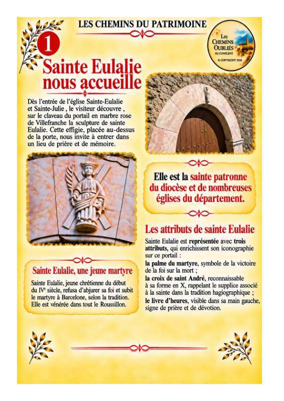
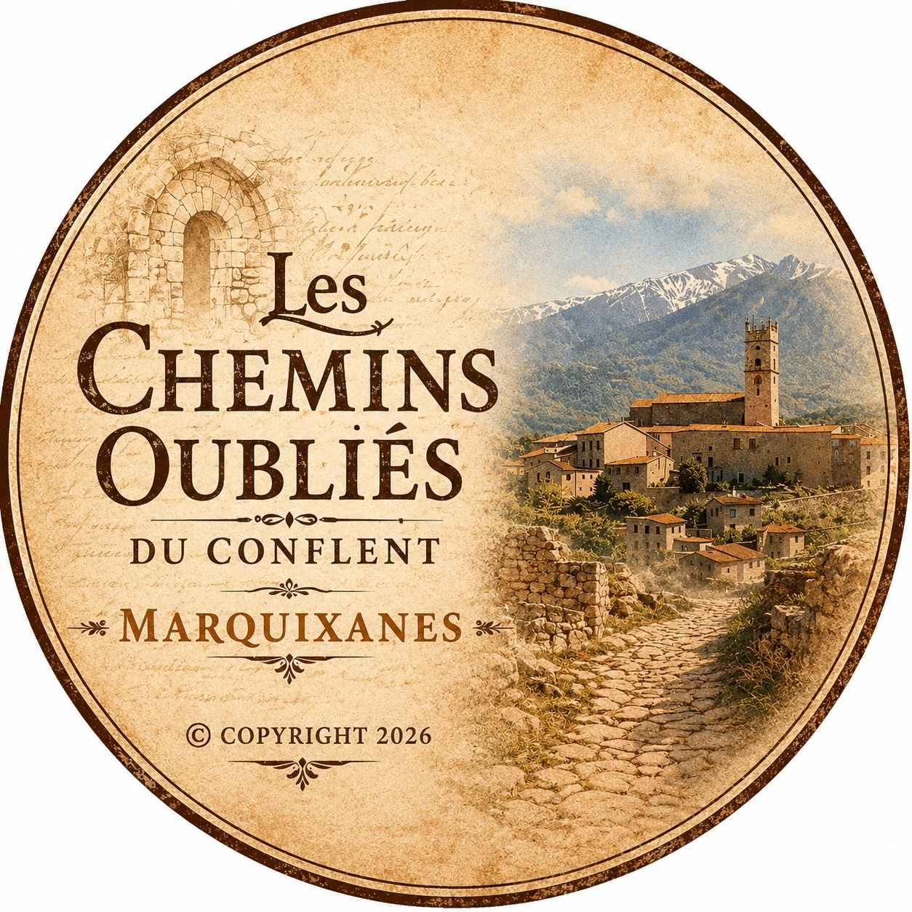
Choisissez un numéro sur le plan pour ouvrir sa notice.
Les résumés reprennent la version de travail de la visite interactive. Les planches du livret et les photographies d’archives accompagnent les notices.
L’entrée et la sainte patronne ; portail, sculpture et iconographie de sainte Eulalie.

Bénitier en marbre rose de Villefranche, daté de 1716 ; eau bénite et accueil dans l’église.
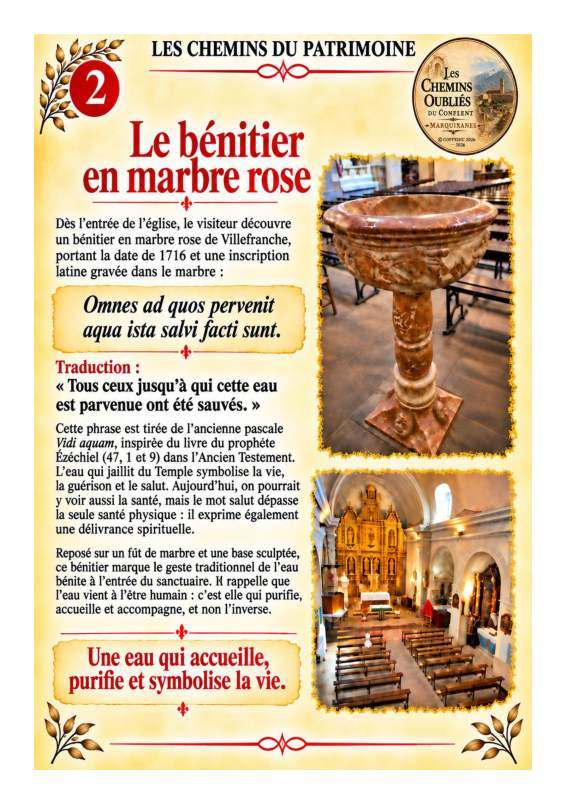
Baptême du Christ, naissance de Jean-Baptiste et anciens fonds baptismaux.
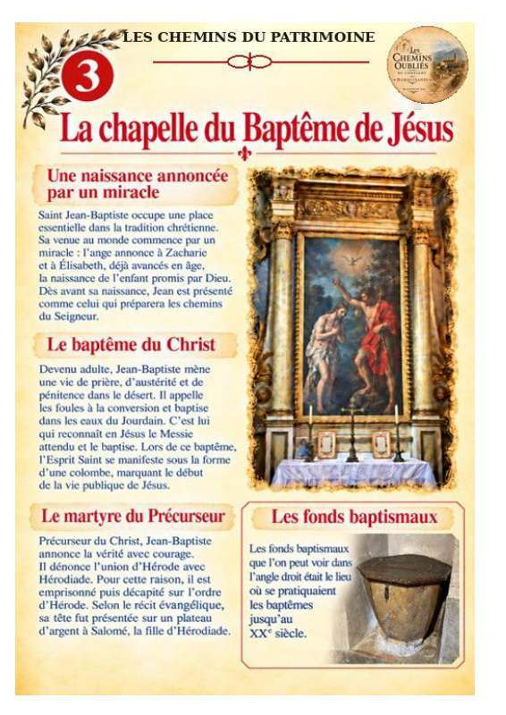
Œuvre attribuée au sculpteur Joseph Sunyer ; miracles et représentation de saint Antoine.
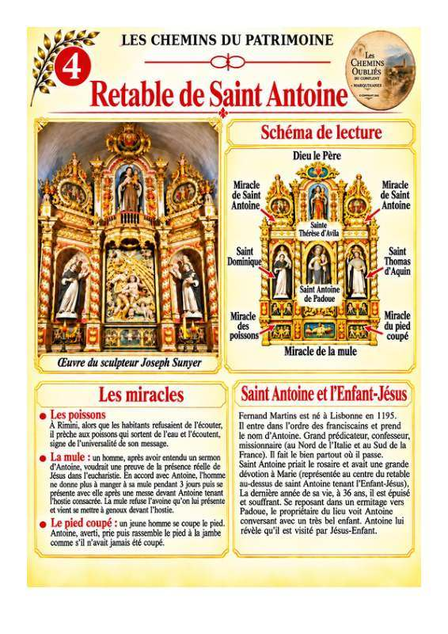
Retable de l’atelier Thierry Paris, dit « maître d’Espira », et iconographie du saint martyr.
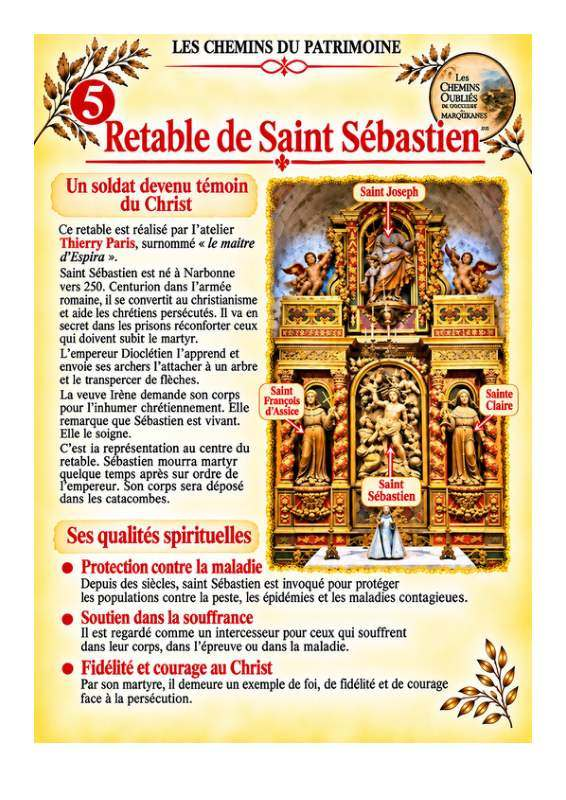
Retable associé à Joseph Sunyer ; cadireta, blason de la famille Mas et schéma de lecture.
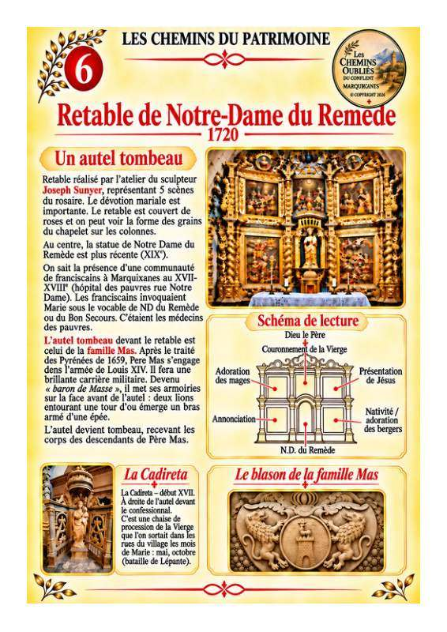
Retable sculpté en 1692 ; saintes Eulalie et Julie, art baroque catalan et lecture des figures.
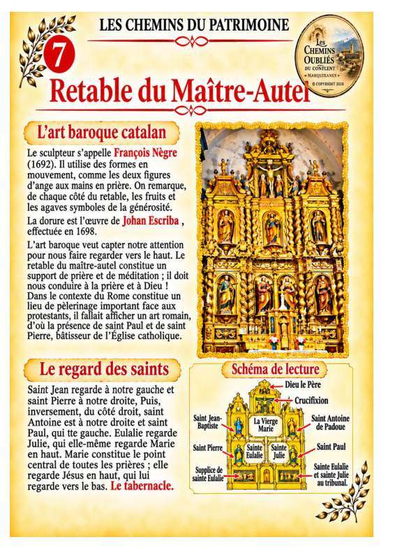
Retable prébaroque daté des années 1630–1640 ; scènes mariales et saints représentés.
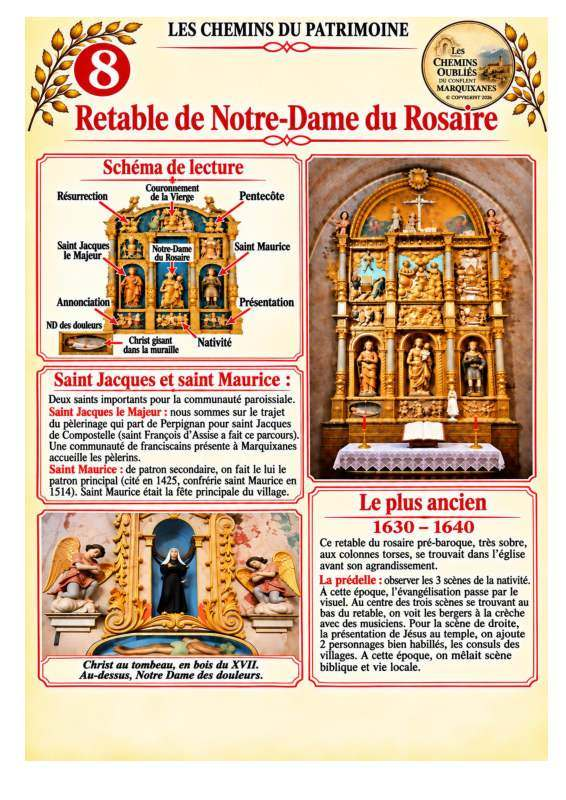
Retable de la Passion daté de 1701 ; colonnes torses, iconographie et histoire du déplacement.
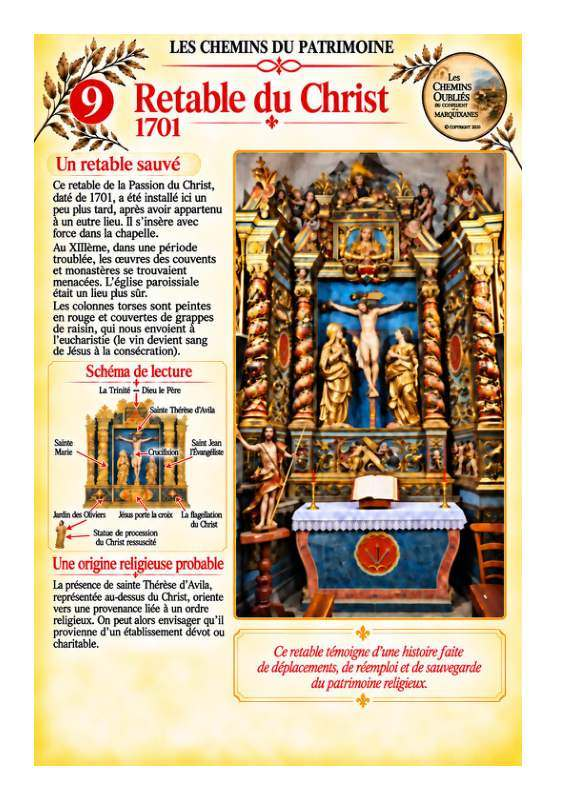
Retable daté de 1762 ; saints figurés et chapelle associée à la famille Graule.
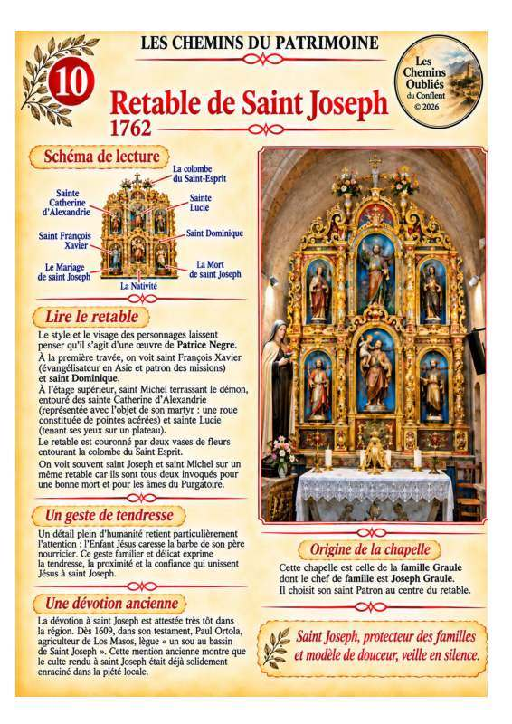
Toile signée Rieudemont et datée de 1745 ; saint protecteur des récoltes.
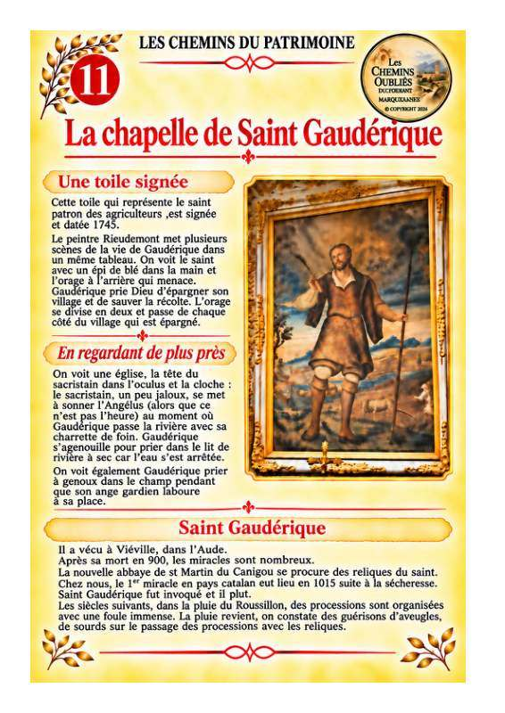
Saint Yves, patron des avocats et défenseur des pauvres ; peinture classée.
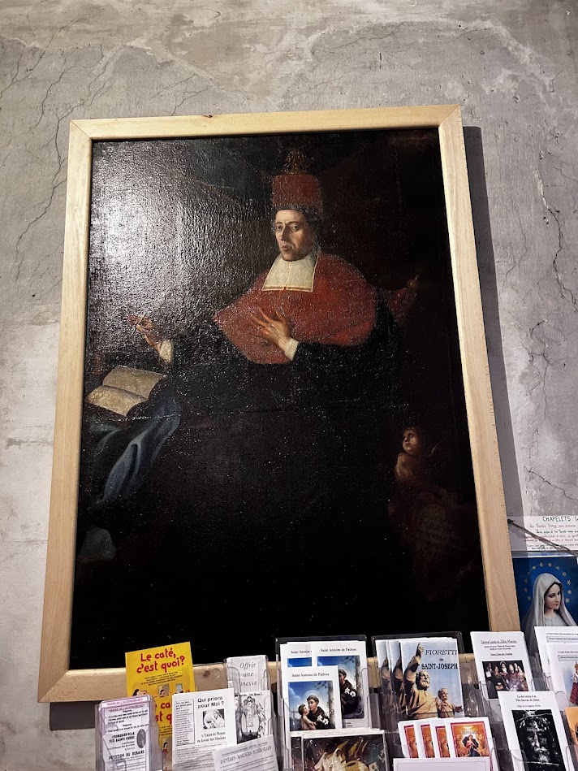
Saint Augustin, évêque et théologien ; tableau classé.
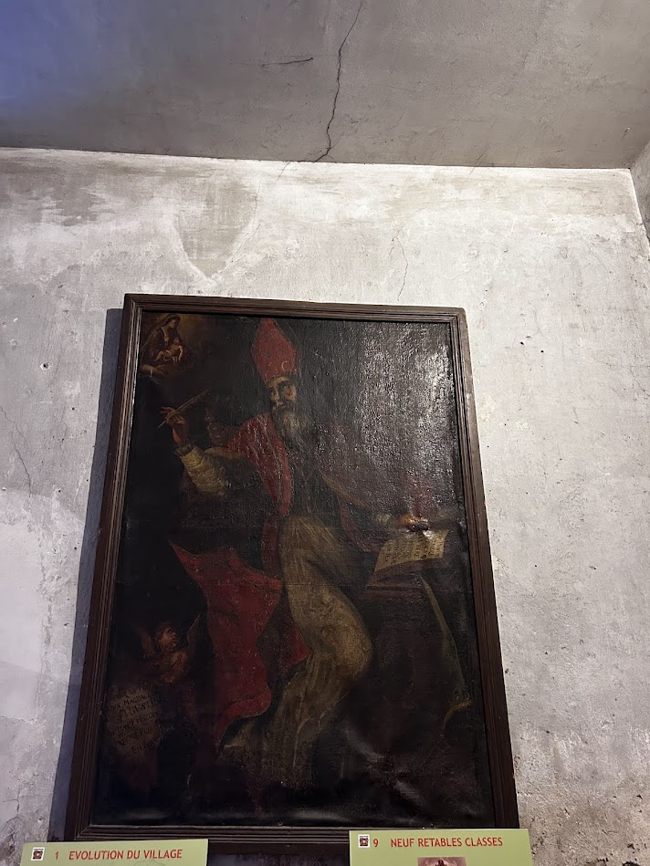
Bénitier ancien près de l’entrée ; décor sculpté et usage de l’eau bénite.
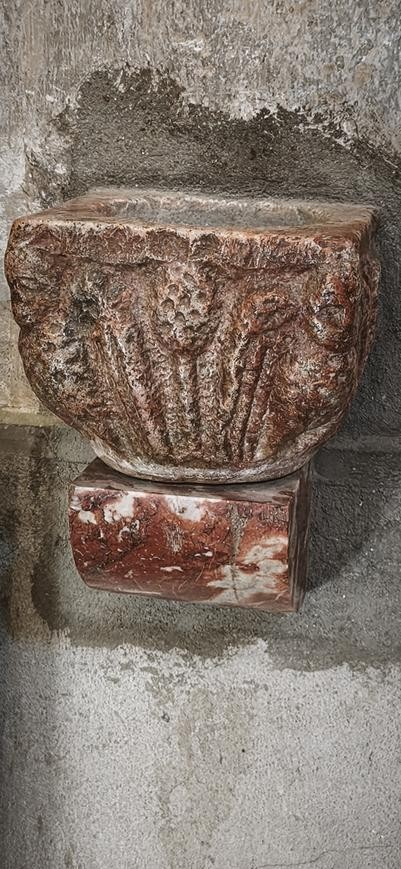